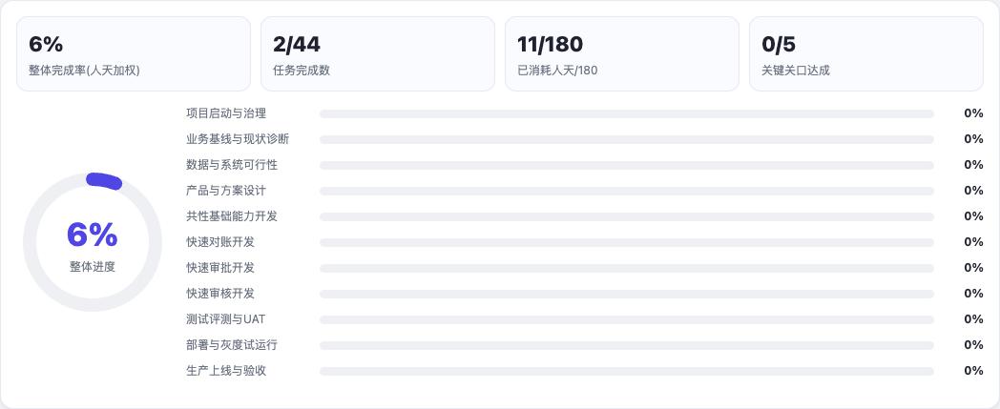
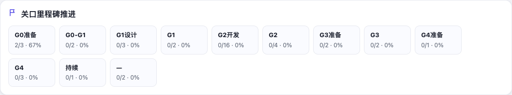

从计划到执行
将阶段目标拆为 WBS、月目标和待办，跟踪计划日期、状态与责任分工。
FDE / PROJECT GOVERNANCE
把场景规划落到任务、责任、进度与评审关口，让团队能够持续跟踪落地过程。
PRODUCT APPROACH
将阶段目标拆为 WBS、月目标和待办，跟踪计划日期、状态与责任分工。
以进度仪表盘和关口里程碑组织项目汇报。任务完成并不等于通过业务或生产验收。
结合风险问题与变更记录，支撑 FDE 与业务、技术和项目团队的协作。
POC / BUILT-IN SAMPLE
以下为桌面 App 原页面加载内置匿名示例后的截图。所有进度、人天和任务数量均为示例值，不代表客户项目成果。该原型的总进度与分阶段进度存在显示差异，尚未核验计算一致性。


工作台帮助组织计划与评审记录；生产准入仍需业务验收、数据与权限检查、评测和审批证据。本页未展示客户计划、交付文件或内部项目记录。